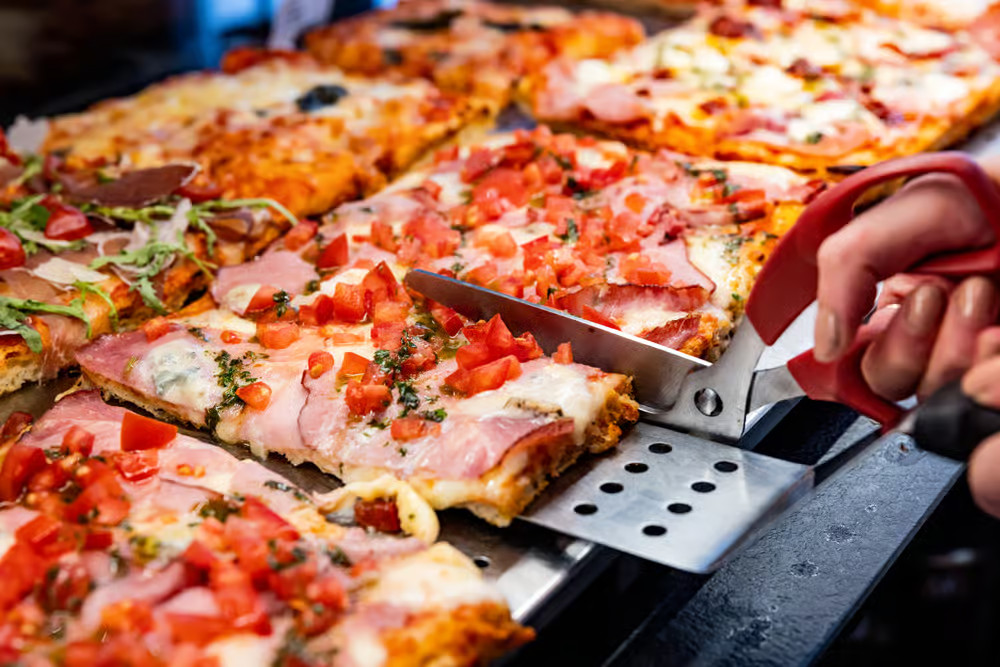

Destaques
Opiniões
A Pizzaria é incrível, o lugar é de fácil acesso, além de ser bonito. As pizzas também são muito
bem feitas!
- Catarina
Culinária genuinamente italiana 🤌 idealizada, pensada e executada por irmãos genuinamente italianos 🤌

A Pizzaria foi fundada no ano 753 a.C. por dois irmãos gêmeos em Roma, Itália. Suas receitas nunca foram alteradas, mantendo assim, a clássica maneira de fazer a verdadeira pizza. O objetivo é manter a tradição iniciada milênios atrás por meio da culinária.
A Pizzaria é incrível, o lugar é de fácil acesso, além de ser bonito. As pizzas também são muito
bem feitas!
- Catarina